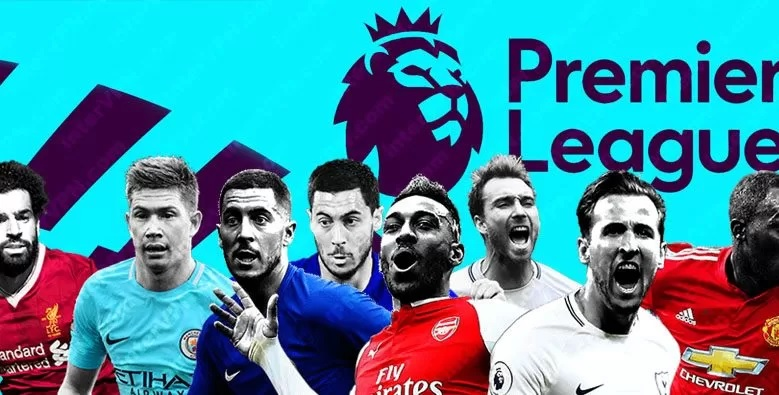

Machine Learning Deep Neuronal Network - Football Predictor(Win/Lose/Draw)
Our Test Data
The Dataset class converts the CSV data to an array of processed football results containing the following keys. Not all of the results in the dataset can be used, as there needs to have been 10 games of history for each team before the statistics can be calculated.
[{
'result': 'H', # Could be H, D or A (for home team win, draw or away team win)
'odds-home': 1.6, # Decimal odds from Bet365 on a home team win
'odds-draw': 4.8, # Decimal odds from Bet365 on a draw
'odds-away': 6.0, # Decimal odds from Bet365 on an away team win
'home-wins': 6, # Number of wins by the home team in the last 10 games
'home-draws': 2, # Number of draws by the home team in the last 10 games
'home-losses': 2, # Number of losses by the home team in the last 10 games
'home-goals': 16, # Number of goals scored by the home team in the last 10 games
'home-opposition-goals': 12, # Number of goals scored against the home team in the last 10 games
'home-shots': 68, # Number of shots made by the home team in the last 10 games
'home-shots-on-target': 53, # Number of shots on target made by the home team in the last 10 games
'home-opposition-shots': 20, # Number of shots made against the home team in the last 10 games
'home-opposition-shots-on-target': 14, # Number of shots on target made against the home team in the last 10 games
'away-wins': 3, # Number of wins by the away team in the last 10 games
'away-draws': 4, # Number of draws by the away team in the last 10 games
'away-losses': 3, # Number of losses by the away team in the last 10 games
'away-goals': 13, # Number of goals scored by the away team in the last 10 games
'away-opposition-goals': 17, # Number of goals scored against the away team in the last 10 games
'away-shots': 32, # Number of shots made by the away team in the last 10 games
'away-shots-on-target': 13, # Number of shots on target made by the away team in the last 10 games
'away-opposition-shots': 47, # Number of shots made against the away team in the last 10 games
'away-opposition-shots-on-target': 21, # Number of shots on target made against the away team in the last 10 games
]}
Feature Columns
The DNNClassifier class we mentioned earlier requires an array of feature columns to be provided. Looking above to the test data section, we have quite a few features available to select.
Removing the result field (that’s going to be the label) and the odds fields, we are left with the following feature columns:
feature_columns = [
tf.feature_column.numeric_column(key='home-wins'),
tf.feature_column.numeric_column(key='home-draws'),
tf.feature_column.numeric_column(key='home-losses'),
tf.feature_column.numeric_column(key='home-goals'),
tf.feature_column.numeric_column(key='home-opposition-goals'),
tf.feature_column.numeric_column(key='home-shots'),
tf.feature_column.numeric_column(key='home-shots-on-target'),
tf.feature_column.numeric_column(key='home-opposition-shots'),
tf.feature_column.numeric_column(key='home-opposition-shots-on-target'),
tf.feature_column.numeric_column(key='away-wins'),
tf.feature_column.numeric_column(key='away-draws'),
tf.feature_column.numeric_column(key='away-losses'),
tf.feature_column.numeric_column(key='away-goals'),
tf.feature_column.numeric_column(key='away-opposition-goals'),
tf.feature_column.numeric_column(key='away-shots'),
tf.feature_column.numeric_column(key='away-shots-on-target'),
tf.feature_column.numeric_column(key='away-opposition-shots'),
tf.feature_column.numeric_column(key='away-opposition-shots-on-target'),
]
The Model
This is where we create our model object. The model_dir parameter is used to save training progress so that you don’t have to retrain your model every time you want to make a prediction. The hidden_units parameter describes the shape of the neural network, [10] corresponds to one hidden layer with 10 neurons in it. We define the output that we expect from our model with n_classes and label_vocabulary. Here we state that the three classes our model will analyse are labelled by H, D or A.
model = tf.estimator.DNNClassifier(
model_dir='model/',
hidden_units=[10],
feature_columns=feature_columns,
n_classes=3,
label_vocabulary=['H', 'D', 'A'],
optimizer=tf.train.ProximalAdagradOptimizer(
learning_rate=0.1,
l1_regularization_strength=0.001
))
We can train our model using the train() method. A model can be trained indefinitely, but with diminishing returns. Different models descend at different rates, so it is important to watch the loss function to see if and when it has converged (and stopped descending).
model.train(input_fn=train_input_fn, steps=1000)
The input_fn parameter is used to provide training data to the model. There are lots of clever ways to feed data into a model, but using numpy arrays is pretty quick and easy:
train_input_fn = tf.estimator.inputs.numpy_input_fn(
x=train_features,
y=train_labels,
batch_size=500,
num_epochs=None,
shuffle=True
)
The Results
The above graph shows how the model developed as it was trained. The DNN converges quickly on a solution and achieves an accuracy of 51%. This accuracy is slightly below the performance of Bookmakers, Bet365 achieves around 53-54% on the same results.The betting return is less stable, and is in the region of a 50% return on investment.
Betting Market
Betting venues in Mexico continue with a positive grow tendency, but these is not even necessary to be in the casino, the casino is at peoples' place by online platforms.
Gambling activities in generated in 2014, 38,300 millions of pesos, growing 16%
Gambling is a widely spread throughout the world. The growth statistics of this industry demonstrate its appeal to the public. In Mexico this type of business is a gold mine, it represents about USD 38,300 millions MXN (INEGI 2014).
There is a saying known as “the house always wins”. This can be by many factors but the most important one is, the data analysis. Sometimes casinos lose, but it can be through fraud.
So how can you make money without cheating?
How can you deny the satisfaction to make money by random decisions?
It can be said that relatively easy through the analysis of past events. By analyzing the king of sports, soccer. Through Premier League, La Liga and Bundesliga full season matches and machine learning, we will help to improve bettors’ probabilities to win bets.
So, if you want to bet, use the suggestions and prepare well.
